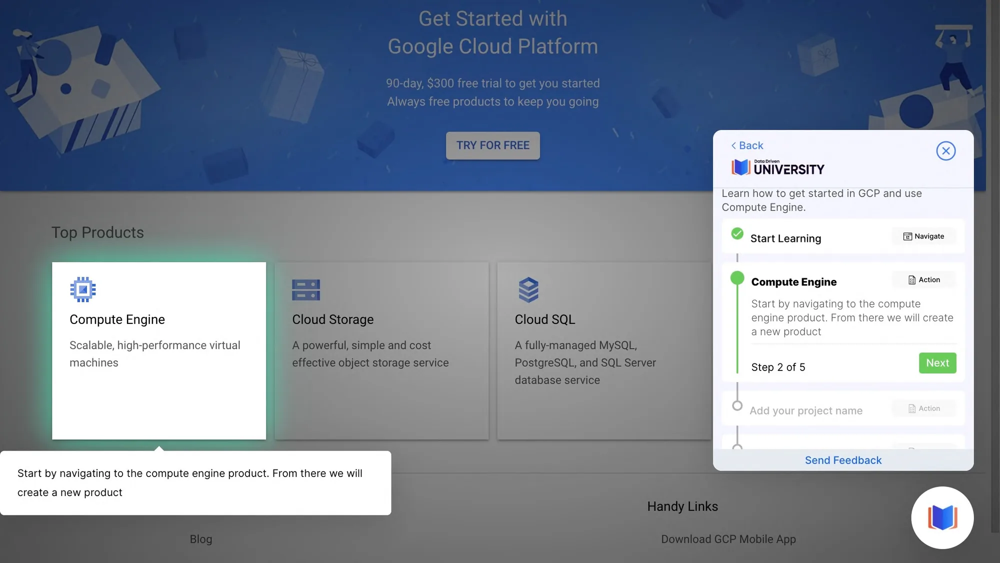
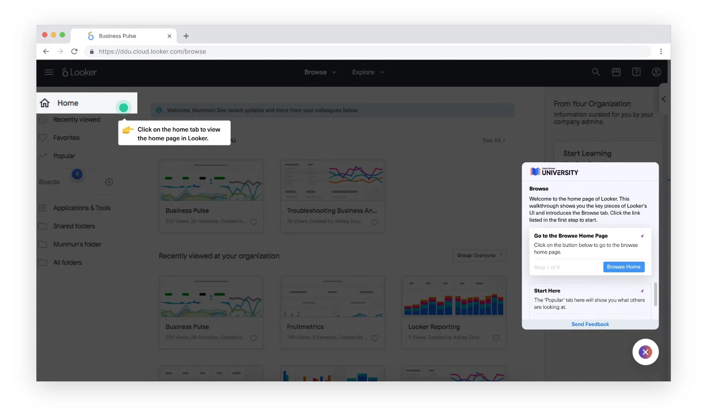
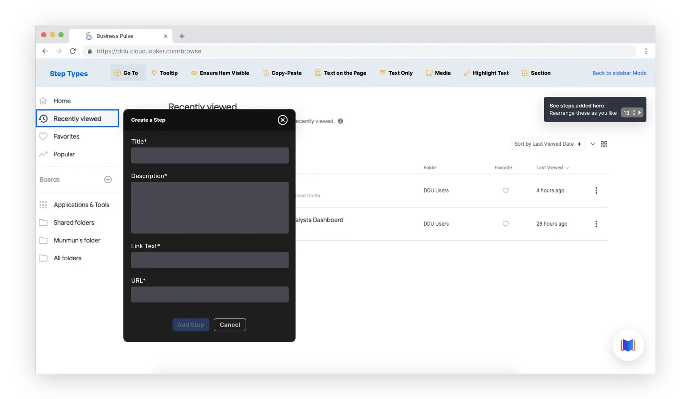
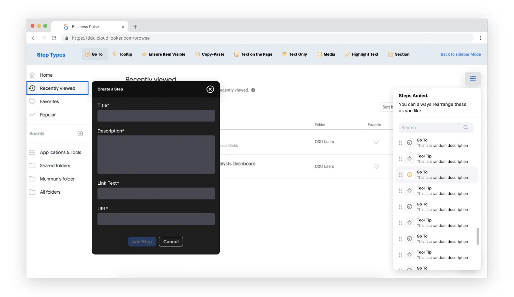
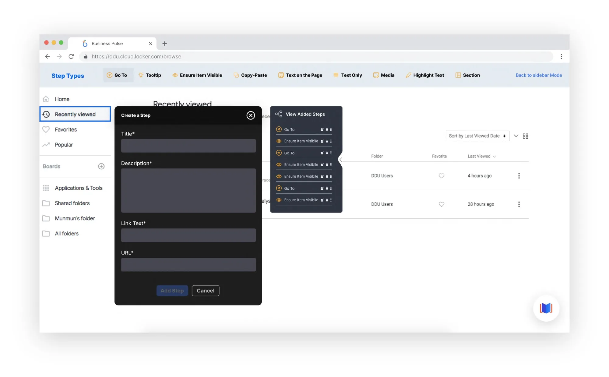
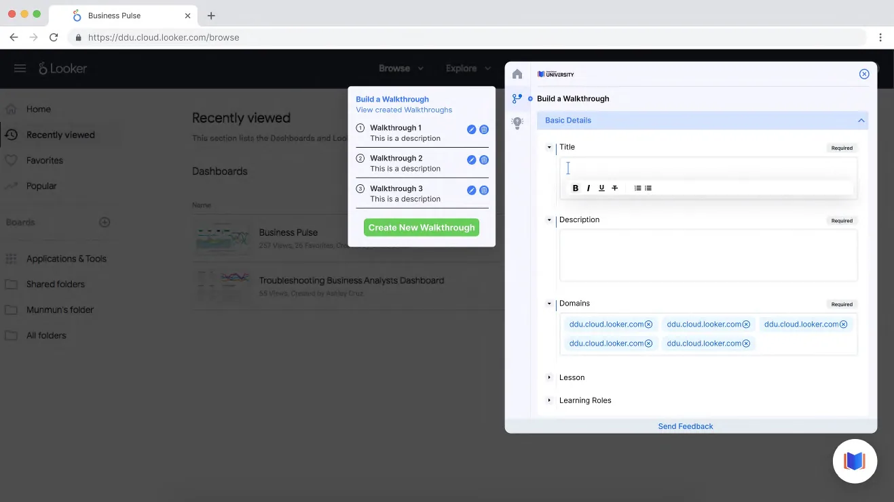
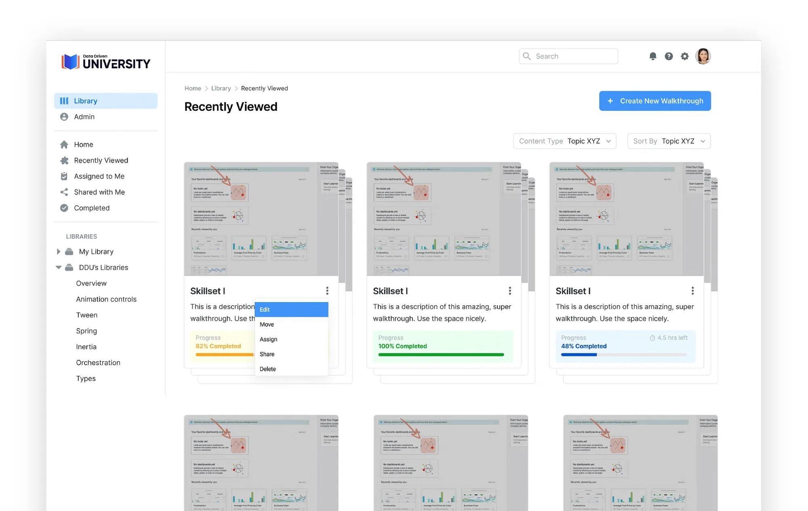
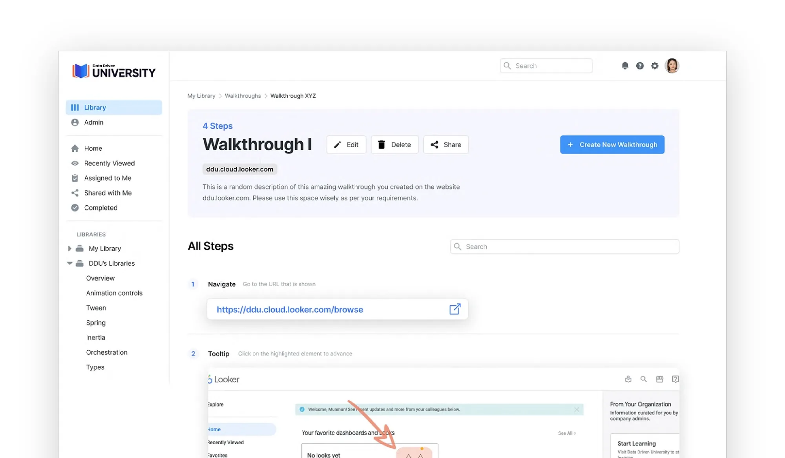
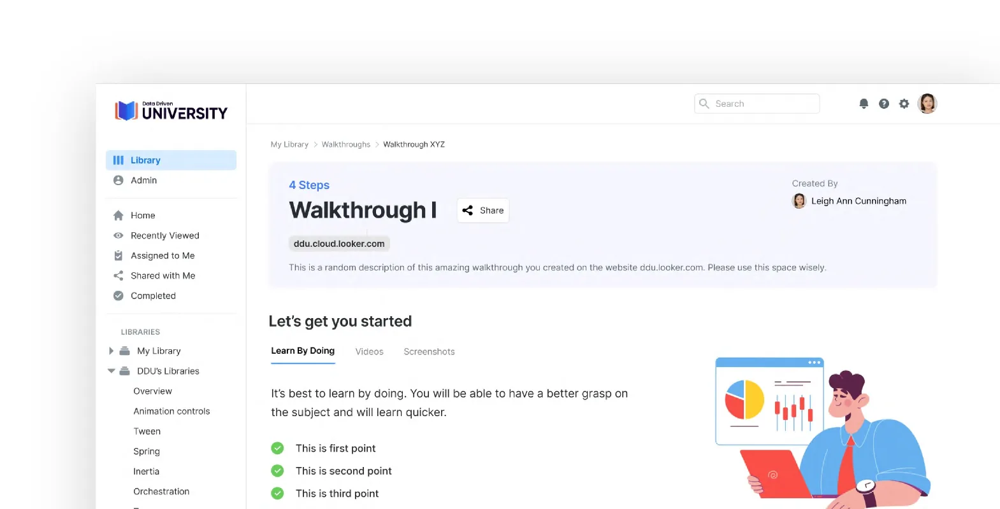
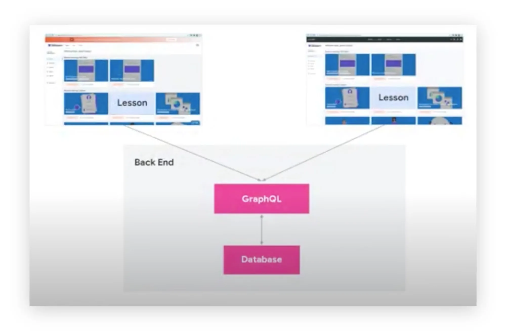

Low friction to launch
A Chrome extension that works on top of existing SaaS tools, with nothing new for companies to integrate.
LMS product design · EdTech
FlowMo (formerly Data Driven University) builds custom learning management solutions that help organisations upskill their teams, delivered on top of the SaaS tools they already work in. We designed it from zero to one with Data Driven Works, and it’s now a full-fledged, VC-funded company.

The brief
We collaborated with Data Driven Works, a company that offers cloud-based technologies: modernising data stacks, data orchestration, data warehousing, business intelligence and advanced analytics, DevOps and overall data strategy.
Their teams kept running into the same problem: people learn SaaS tools like Looker and Google Cloud best inside the tool itself, yet training lived in videos and documents somewhere else. FlowMo puts guided, step-by-step walkthroughs right on top of the product being learned.
As an MVP, it had to deliver four things from day one:
A Chrome extension that works on top of existing SaaS tools, with nothing new for companies to integrate.
Learners always know where to click, what to read and what comes next.
Admins build walkthroughs visually, step by step, without writing code.
A product model built to grow into a business, not just an internal tool.
Approach
Following an agile way of working, we constantly tested ideas, strategy and assumptions so the end result stayed aligned with end users’ needs and goals.
Key tasks handled
Features designed
Nº1 · Sidebar learning elements
We created a separate module with all the sidebar learning elements in a hover format.
Direct customer research showed that users wanted clearer cues: when on the screen they’re supposed to click, and what they’re supposed to read.
So every step became a hovering element. Along with what to do, learners are pointed to where on the screen to do it.

Nº4–5 · Dynamic widget & floating mechanism
The quick builder is for building a basic walkthrough without much description. Adding, editing, deleting and inserting steps in between had to be easy, so we designed a floating card that holds every step and lets admins add one anywhere.




Nº3 · Content library
The content library gives users a comprehensive view of the skills they’re learning and their progress. They can see the lessons in a walkthrough, time and overall progress, and filter walkthroughs by topic.



Nº2 · Back-end & tech stack
One back end serves every lesson, whichever tool it appears in: lessons from the sidebar and the library flow through GraphQL into a single database.
As an MVP, 0-to-1 design firm, we build custom products on top of existing UI components. It helps ship faster and shortens the time to market.

From the Chrome Web Store
So much faster than writing out instructions, and much more effective than recording videos on Loom.
Building something from zero?